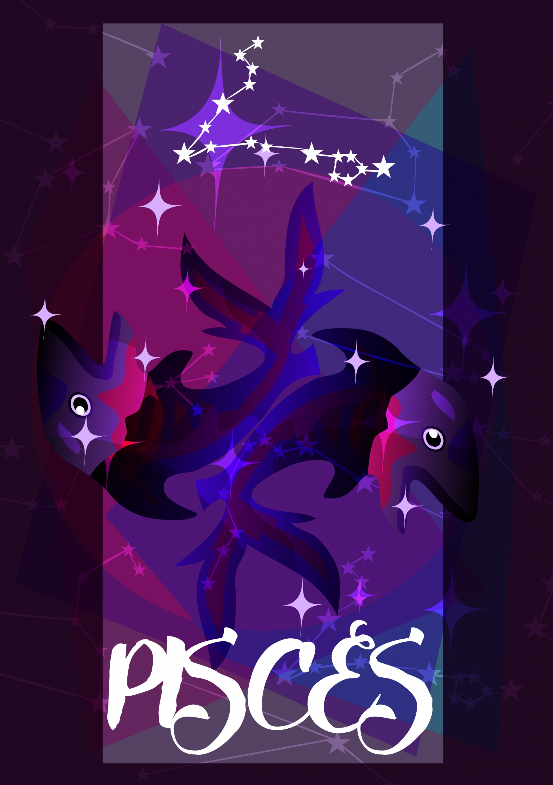

FISH | FEB 19 - MAR 20
CREATIVE, SENSITIVE, ARTISTIC
| Element: water | Polarity : Negative |
| Quality : Mutable | Ruling Planet: Neptune |
| Spirit Color : Sea Green | Lucky Gem : Moonstone |
| Flower : Water lily | Top Love Matches : Virgo |
| Ruling House : Twelfth |
Smart, creative, and deeply intuitive, Pisces can be close to psychic. Pisces feel things deeply, and have incredibly strong gut reactions. A Pisces "knows" things from deep within, and can often judge whether a person or situation is good or bad. That doesn't mean a Pisces ignores the logical part of their brain, though. Deeply intelligent, Pisces have a profound respect for the power of the human mind. Is it a surprise that Albert Einstein was a Pisces?
Pisces are sensitive, and get along well in small groups of people. Sometimes, a Pisces may feel like they have an internal and external self, and they may need to spend a lot of time solo to recalibrate those two halves of themselves. A Pisces is rarely lonely when they are by themselves, and have an active imagination. Creative, Pisces love spending time reading, exploring or creating art or music, and understanding their emotions through art.
Pisces may seem quiet but they are incredibly strong and have a very strong sense of right and wrong. Their moral compass, along with their gut, guides them well. When a Pisces speaks up, people listen. Pisces tend to take in everything around them, and they are great people to ask for advice on pretty much anything. While Pisces has strong convictions about the best way for them to live, they have a "live and let live" approach when it comes to others, and are accepting and nonjudgmental of all.
"There is no me, there is only we."
A Pisces has a great gut and great intuition, which can guide them well, and help them make creative or intellectual leaps other people might not be able to see or consider. Deeply imaginative, Pisces can happily spend hours daydreaming, and are often just as surprised as the rest of the world when the pieces come together in an amazing way. Pisces don't necessarily work the same way as other people do, and they may be able to get things done incredibly quickly. But it's not that they're that much faster than other zodiac signs. It's that the time they may have been caught staring into space are times that are deeply valuable to them, and necessary for any creative process. The more a Pisces understands how they work and respects that process, the better they are.
Pisces can sometimes spend too much time in their heads, getting overly wrapped up in a problem and assuming there's no solution. Pisces are always one of the first signs to lend an ear to others, but when it comes to asking for help—especially emotional help—Pisces can sometimes wall themselves off, assuming that nobody knows what they are feeling and not even giving anyone a chance to try. Learning how to open up can be a huge lesson for Pisces. Of course, the fact remains that no one can read a Pisces mind. Pisces sometimes feels frustrated that they are seen as "more complicated" than their peers, and that feeling can make them act or seem defensive. Pisces needs to learn to let down their guard, allow people to love them, and allow for mistakes to be made.
The realization that life is so much more than what we see. Pisces is in tune with the magic of everyday existence and can find beauty in all situations, even ones that may cause tears. Recognizing these moments of beauty and being able to share them with others is what makes Pisces a creative sign, and is also what makes Pisces a soulful sign.
Ed Sheeran, Harry Styles, The Weeknd, Shakira, Oprah Winfrey, Jennifer Aniston, Chloe Moretz, Taylor Lautner